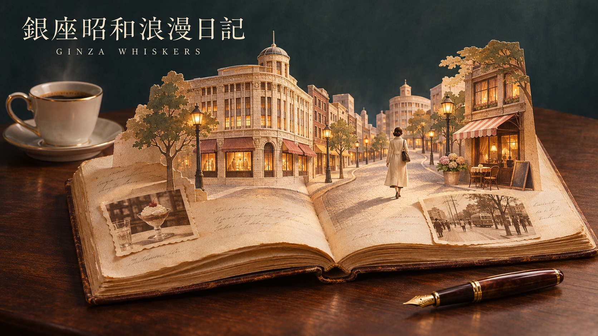

銀座昭和浪漫日記｜Ginza Showa Romance Diary
あの日の銀座が、今日の寄り道になる。
デパ地下に胸を躍らせた放課後。路地に灯る看板、街角で交わした何気ない言葉。銀座の記憶には、時代の風景と、人のぬくもりが息づいています。
「銀座昭和浪漫日記」は、銀座に流れる日々の記憶を書き留める読み物です。暮らしのひとこまや街にまつわる物語をたどりながら、受け継がれる銀座の表情を見つめます。
知っている道に、知らなかった物語を。次の銀ブラが少し楽しみになる一篇を、日記のページから見つけてみませんか。
